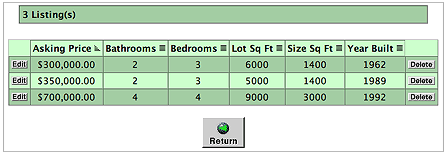
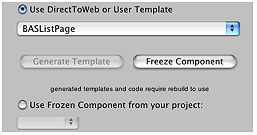
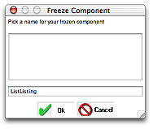
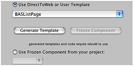

An Introduction to Direct To Web
Direct to Web is a Java-based technology that provides a quick and easy method to create a web application that accesses a database. It lets you experiment and prototype, while also allowing you the flexibility to access the full power of WebObjects.
There are several stages you can go through, depending on your needs:
First, you create a WebObjects project and specify a model to use. Direct to Web uses the model, which defines the mapping between your database and enterprise object classes, to generate an application that provides an interface to your database. This application consists of a set of pages that allow you to do queries on the entities in your database, display results, and add and delete records.
A complete model file that correctly defines all the relationships is the key to creating a WebObjects application with Direct to Web.
To change the way the pages are presented, you can use the WebAssistant, which is a Java applet that runs in your web browser. For each page in your application, the WebAssistant allows you to specify which page is shown, which properties are shown on the page, how these properties are displayed, and the order in which they are listed. You can experiment with different configurations until you are satisfied, without writing any code.
If you want to customize beyond what the WebAssistant provides, you can “freeze” any or all of the pages in your application as WebObjects components. This gives you the full power of WebObjects: you can modify a component’s layout using WebObjects Builder, and you can customize its behavior by writing Java code using Project Builder.
You can also modify the templates that Direct to Web uses to generate its pages. These templates are WebObjects components that you can edit with WebObjects Builder. This way you can modify the “look” or style of the pages that Direct to Web generates.
You can also use Direct to Web in other types of WebObjects applications. Your application can take two approaches:
embedding Direct to Web components in your pages; these include query forms, lists, or edit/inspect forms
linking to dynamically generated Direct to Web pages
This chapter describes the elements that make up a Direct to Web application and shows you the steps you follow when creating and modifying an application. If you find that your application needs some specific behavior that Direct to Web does not provide, see “Customizing a Direct to Web Application.” For more information on using Project Builder, see Project Builder Help. For more information about using Project Builder and WebObjects Builder to develop WebObjects applications, see Developing Web Applications. For more information about using WebObjects with database applications, see Enterprise Objects as well as Using EOModeler.
In this section:
Creating a Direct to Web Project
The Structure of a Direct to Web Project
Using Your Direct to Web Application
Customizing Your Application With the WebAssistant
Running the WebAssistant With appletviewer
WebAssistant Overview
Restricting Access to Entities
Customizing Pages
Setting Which Properties are Displayed
Changing How Properties Are Displayed
WebAssistant Expert Mode
Generating Components
User Templates
Creating a Direct to Web Project
To create a Direct to Web application, begin by using Project Builder to create a WebObjects application project. Follow these steps:
Launch Project Builder.
Choose File > New Project.
Select WebObjects/Direct to Web Application.
Set the name and location of your project.
Enter
D2WTutorialin the Project Name field.Click Set and select a location for your project.
Click Next in the “Enable J2EE Integration” window.
Click Next in the “Enable Web Services” window.
In the “Choose EOAdaptors” window, make sure
JavaJDBCAdaptoris selected.Click Next.
Add additional frameworks to the project.
No additional frameworks are required for this tutorial, so click Next.
Choose a model file.
You’ll use one of the models defined in the sample projects.
Click Add.
Navigate to the
/Developer/Examples/JavaWebObjects/Frameworks/JavaRealEstatedirectory.Select
RealEstate.eomodeldand click Choose.Click Next.
Select a look for the user-interface.
This pane offers a selection of user-interface styles (“looks”) for your Direct to Web application; see “The Different Looks for WebObjects Applications” for more information.
Select Basic Look from the Direct To Web Looks list and click Next.
Build and launch the project.
This pane asks if you would like to build and launch your application immediately. If you choose not to have the wizard build and launch your application, see “Using Your Direct to Web Application,” which tells you how to launch your WebObjects application and describes what you see when you launch it. For information about building a project, see Developing Web Applications.
For the purposes of this tutorial, make sure “Build and launch project now” is selected and click Finish.
The Different Looks for WebObjects Applications
In this release, Direct to Web offers three different user-interface styles, or looks, for WebObjects applications: Basic, Neutral, and WebObjects. Currently the only simple way to change the look of an application is to re-create a project using Project Builder. Therefore it is advisable to know which look you want in advance.
All the looks provide the same functions for the user. They only differ in the style and placement of their user-interface elements.The Neutral look and the WebObjects look are very similar but the Neutral look does not display the Apple logo, which makes it easier if you want to use your own logo.
The login page for the Basic look has a panel-like submit form for the entry of user name and password:
The login page for the Neutral look is much simpler:

This is the login page for the WebObjects look:
In the dynamically-generated pages (query, list, inspect, and so on), the Basic look differs from the Neutral and WebObjects looks even more strikingly. In the Basic look the control header runs across the top of the page whereas in the Neutral and WebObjects looks it appears on the left side of the page. In addition, the Basic look is more tabular while the Neutral and WebObjects looks tends to present records in visual “blocks.” For example, the following is an example of a list page in the Basic look:
The list page in the Neutral look appears like this:
The following illustrates what a list page looks like in the WebObjects look:
The Structure of a Direct to Web Project
A Direct to Web project has a structure similar to other WebObjects application projects. A newly created project contains three components, each enclosed in a subgroup, which you can access if you disclose the contents of the Web Components group in the Groups & Files list in Project Builder’s main window.
MenuHeader.wois a reusable component that contains the header with the control buttons on the left side of each page (or the top of the page in the Basic look.) You can add text or other elements to this component if you choose.Main.wois the main component, representing the login page of the application.PageWrapper.wois a reusable component that wraps the content of the pages of the application (except forMain.wo). It contains a header, the menu header component (MenuHeader.wo), and footer text and elements common to these pages. If you want to customize the headers and footers for all pages of your application, you can add text or other elements to this component.
You can add code to the .java files corresponding to each component to extend their functionality. See the WebObjects API Reference for more information on the Direct to Web API.
Each of the subgroups that contains a component also holds the component’s .api file. This file specifies the exported keys, both optional and required, for each component.
As you run your application, Direct to Web creates additional pages, using information in your model file and the settings specified in the WebAssistant. These pages do not show up as components in your project. Rather, Direct to Web creates them dynamically using a set of reusable components in the Direct to Web framework. However, you can generate components or user templates. When you do that, you can modify the resulting components just as you would with any other WebObjects components. See “Generating Components” and “User Templates” for more information.
The Resources group contains the model file you specified when you created the project (in this example, RealEstate.eomodeld). It also contains user.d2wmodel, which stores the preferences you have specified using the WebAssistant. Advanced users can edit this file; see “The Rule System” for more information about the rule file.
Using Your Direct to Web Application
Once you have created a Direct to Web application using Project Builder and the WebObjects application wizard, and have compiled the resulting project files, you can launch the application by clicking Build and Run in Project Builder’s toolbar . The application pages are displayed in a web browser, where you can test the application’s presentation of data and, with the WebAssistant enabled, modify the layout of that data.
Launching a Direct to Web Application
To launch your application from Project Builder, click in the toolbar in Project Builder’s main window.
Before you launch the application you might want to set some command line options. For example, when running a Direct to Web Application for deployment, you should turn on caching and disable the WebAssistant (to prevent anyone from connecting to the application using WebAssistant). To do this, set the -WOCachingEnabled and -D2WWebAssistantEnabled options, respectively:
Under the Project menu choose “Edit Active Executable”.
Under the Launch Arguments listing in the content pane, click the “plus” icon.
Enter
-WOCachingEnabled YES -D2WWebAssistantEnabled NOin the new entry that was created.
For other command-line options for WebObjects applications, such as -WOPort, see Deploying WebObjects Applications.
You can test the Direct to Web application using a web browser on a machine remote from the machine on which the application is running (that is, the server). When you launch the application, look in the console output, which is displayed in the Launch panel, for the line containing application’s URL.
Welcometo D2WTutorial! |
Opening application’s URLin browser:http://localhost:1234/cgi-bin/WebObjects/D2WTutorial.woa |
Enter the URL in your browser, after substituting the host name of the server machine for “localhost”. In fact, you can exclude every thing in the URL after the application port number. For example, if the server host name is “foobar” you would enter the following URL in the browser to load the WebObjects application:
http://foobar:1234/ |
The Login Page
When you launch your application, your web browser displays the Direct to Web login screen:
The login page is the default implementation of your Main component, Main.wo. It contains text fields to enter a name and password, as well as a submit button (Login) and an Enable Assistant checkbox. To go to the application’s default first page, select Enable Assistant and click Login button. You don’t need to enter a name and password, because the default application provides no password-checking logic. If you don’t select Enable Assistant before clicking Login, you won’t have access to the WebAssistant.
You can modify the login page (Main.wo) to provide any behavior or appearance you like. For example, you can add your own password-checking logic, as shown in the section “Adding Authentication to the Main Component.”
Dynamically Generated Pages
Besides the login page, there are nine types of dynamically-generated pages (or reusable components) in a Direct to Web application:
A query-all page that displays all entities that are currently exposed and lets users construct queries on the attributes (but not the relationships) of those entities; see “Query Pages.” The properties of this page cannot be customized.
A query page that allows the user to construct a query for a particular entity; see “Query Pages.”
A list page that displays one or more records of a particular entity in tabular form. List pages and select components are implemented with the same components; see “List Pages and Select Components.” The result of a query is always a list page.
An inspect page that displays a single record of a given entity. Inspect pages and edit pages are implemented with the same components; see “Inspect and Edit Pages.”
An edit page that displays a single record of a given entity and also allows you to make changes to the record and save it to the database. Edit and inspect pages are implemented with the same components; see “Inspect and Edit Pages.”
A select component that lets users select a record from a list, thereby adding it to a relationship or populating an edit component with it. List pages and select components are implemented with the same components; see “List Pages and Select Components.”
A confirm page that prompts users to confirm that they want to delete records. The properties of this page cannot be customized.
An edit-relationship page is a multiple component page for removing and adding objects to a relationship. See “Edit-Relationship Pages.”
An error page for displaying information related to exceptions and other errors. The properties of this page cannot be customized.
All pages in your application contain the standard Direct to Web header (defined in MenuHeader.wo) at the top of the page. This header provides a number of controls, shown in Figure 1-1.
For best results when navigating through a Direct to Web application, don’t use your web browser’s backtrack buttons. Instead:
To return to the previous page from an edit or inspect page, click Cancel.
To return to a query page from a list page, click Return.
Query Pages
Direct To Web has two kinds of pages for constructing queries on the properties of entities: a query-all page and a query page. When you log into a Direct To Web application, the query-all page is displayed first by default.
The query-all page enables you to construct a query on an attribute of a particular entity (queries on relationships are not allowed). To use this page, select a property from an entity’s pop-up list, specify the comparison operator, type the string to search on and click the magnifying-glass button.
The query page, on the other hand, is tied to a particular entity but allows you to construct queries on relationships as well as attributes. The following illustrates a query page:
The first column in the table lists the current entity’s properties. The second column contains pop-up lists and text fields that let you enter values to construct queries on single and multiple properties. When you specify values for multiple properties, the query becomes the logical AND of the queries on the individual properties.
A property is either an attribute (a value stored directly in this entity’s table) or a relationship (an association between this entity and another entity). For example, in the figure above, First Name is an attribute and Contact Info is a relationship. You can use the WebAssistant to hide properties that you don’t want users to see.
Note: Direct to Web only displays properties that are class properties. In addition, primary keys and attributes marked as the source of a relationship are hidden by default.
Properties are represented in various ways. For example, in the figure, you enter a single string value for First Name, while you enter a range of values for User Type. You can change the representation of most properties using the WebAssistant. In particular, you may want to change how relationships are shown, since by default, you query them by specifying an ID, which is something the user is unlikely to know. See “Changing How Properties Are Displayed” for more information on the different ways of representing properties in your application’s pages.
You can choose a string operator (starts with, contains, ends with, is, like, =, <>, <, <=, >, >=) and specify a string with optional special characters in query fields for string searches. For example, you could select “starts with” in the Customer entity’s Last Name pop-up list and enter “sh” in the text field to search for all customers whose last name begins with those characters. You can also use the “like” operator and enter a string with the asterisk character to indicate “all occurrences.” For instance, you could enter “*rob*” to return all customers whose last name contains the substring “rob”. Alternatively you could select “contains” in the pop-up list and enter “rob” to return the same customers.
In the Customer query, to get a list of all customers whose last name containts “id” and first name begins with “r”, you would:
Select “starts with” in the First Name pop-up list and enter “r” in the text field.
Select “contains“ in the Last Name pop-up list and enter “id”the text field.
Click Query DB.
The results are displayed in a list page; see “List Pages and Select Components.”
To clear the query page, click Build Query.
List Pages and Select Components
A list page displays a table showing multiple records of an entity. List pages are used to display the results of a query, or to show the records satisfying a to-many relationship in another list or inspect page.
Each row in the table represents a record. By default, a batch of ten records are shown in a page. To change the batch size, type a number in the “Display _ items” field and press Return or Enter. To display additional records in either direction, click the triangle buttons or enter the page number you want to go to.
Each column in the list represents one of the entity’s properties. By default, all properties are shown in alphabetical order. You can hide columns and change their order by using the WebAssistant; see “Customizing Your Application With the WebAssistant.”
The symbols to the right of attribute names represent their sort order:
: ascending order
: descending order
: unsorted
To change the sort order for any attribute, click the title to cycle between ascending, descending, and unsorted. By default, the records are sorted in ascending order by the attribute in the first column. You can specify up to three columns to sort on; the last one specified becomes the primary sort key.
For properties that represent relationships, an Inspect button appears in the cell by default (DisplayToManyFault).
Note: By default, the list page does not display relationships (including the Inspect buttons). You can configure the list page to display relationships using the WebAssistant; see “Customizing Your Application With the WebAssistant.”
When you click the Inspect button one of two things happen, depending on the type of relationship:
If it is a to-one relationship, an inspect page appears, showing the destination record.
In the above example, the Customer entity’s Agent relationship is a to-one relationship to the Agent entity. If you click the Inspect button, an inspect page appears for the Agent entity corresponding to the selected customer; see “Inspect and Edit Pages.”
If it is a to-many relationship, another list page appears, showing all the destination records in the relationship.
In the above example, the Customer entity’s Suggested Listings relationship is a to-many relationship to the Listing entity. If you click the Inspect button, a list page appears, showing all the suggested listings in the selected customer.

You can use the WebAssistant to display the related records directly in the table instead of with an Inspect button; see “Customizing Your Application With the WebAssistant.”
The select component looks a lot like the list page, but instead of the Edit button there is a Select or Add button. The select component occurs in multiple-component pages. In the edit-relationship page you click Select or Add to add a record to a to-many relationship or select a record for a to-one relationship. In the master-detail page you click Select to select a record to edit. A select component looks like this:
Inspect and Edit Pages
Inspect pages and edit pages display the data for a single record of an entity. An edit page allows you to make changes to the record and save the changes, while an inspect page is read-only.
An inspect page looks like this
Note the buttons at the bottom of the page:
Delete allows you to delete the record from the database.
Return takes you back to the page from which you accessed this inspect page.
Edit brings up the equivalent edit page for this record, so that you can make changes. (However, if your application specifies a particular entity as read-only, you won’t be able to edit it.)
Also note the Customers property in the example above. You click the triangle to display the Customers of this Agent in a list, browser, or table, as in the following example:
This property is configured with the DisplayToManyTable component. For more on how this is done, see “Representation of Relationships.”
An edit page (or edit component) looks like this:
It is similar to the inspect page, except that it has a Save button (for saving changes to the database) instead of an Edit button. If you click the Edit button next to the list of Customers, an edit-relationship page is displayed for editing the records in the to-many relationship. Edit components can occur in multiple-component pages, such as the master-detail page.
Edit-Relationship Pages
An edit-relationship page allows users to add records to a relationship and remove records from the relationship. Users typically come to these pages when they click an Edit button next to a relationship in an edit page. Edit-relationship pages consist of three separate components, of which two are shown at any one time. The first component lists the relationships of a particular property and contains several controls. In addition, a query component initially appears for locating another object to link to for that property. The third component, a select component, appears after you have specified a query and is discussed in the following pages.
This user interface facilitates the following tasks:
To remove a record from the property, select the key identifying the record in the browser and click Remove.
To add a new record to the property, click New Record. An edit component appears underneath the list of relationships; fill out the fields of the edit component and click Save to add the new record to the database and the new relationship to the property above.
To locate an existing record to add to the relationship, enter the properties to search on in the query component and click Query DB.
When a query is executed (assuming matching records are found) a select component replaces the query component.
To add a listed record to the to-many relationship, click the Select button. To construct a new query, click the Build Query button.
When you have finished editing a relationship, click the Return button under the browser to return to the original edit page. You must click the Save button in this page to store the changed relationship in the database.
Master-Detail Pages
Master-detail pages put a select component and an edit component on the same page, thereby allowing users to select and edit records without having to go to another page. The following is an example of a master-detail page:
To use a master-detail page, click Select next to a record in the list component. The record is displayed in an edit component. See “Inspect and Edit Pages” for usage information.
The master-detail page does not appear under Tasks in the WebAssistant (expert mode). This is because it is defined as a type of list page (BASMasterDetailPage, NEUMasterDetailPage, or WOLMasterDetail page depending on the look) of the list task.
Customizing Your Application With the WebAssistant
The WebAssistant allows you to customize each page of your application. You can specify
which entities of the model the application displays and, of these, which are read-only
global attributes of pages, such as style, color, and border thickness
which properties are displayed, and in what order
By default, an entity’s properties are listed in alphabetical order. Often, you’ll want to change the order, as well as hiding some properties.
how number and date strings should be represented
how relationships should be represented
Running the WebAssistant With appletviewer
You can launch WebAssistant using the Java program appletviewer. You might need to do this if your web browser is unable to launch WebAssistant itself. Follow these steps:
Launch your application with the command-line option
D2WWebAssistantEnabledset to YES. This is covered in “Launching a Direct to Web Application.”In the “Run” output of Project Builder, look for a line similar to the following:
DirectToWeb WebAssistant launch line:appletviewer http://localhost:51508/cgi-bin/WebObjects/D2WTutorial.woa/wa/D2WActions/openWebAssistant
Open the Terminal application provided on Mac OS X.
Copy the string beginning at “appletviewer” up to “openWebAssistant” to the Terminal and press Return.
When you complete this procedure, WebAssistant launches and connects to your application. If you stop and restart the Direct to Web application, the WebAssistant will re-connect to it—provided it is running on the same port.
A standalone WebAssistant has exactly the same functionality as one launched inside your browser. However, if the browser you are using is not Java-enabled, your pages are not automatically refreshed after you click Update. You must either click your browser’s “reload” or “refresh” button or (when you are picking a new type of page, such as a MasterDetails page instead of a ListPage), you will have to re-navigate to the same page.
WebAssistant Overview
When the Web Assistant applet is launched, it appears in a window whose title indicates the current page and entity:
The WebAssistant has four displays, each selectable by clicking a tab:
Properties Allows you to set which properties of an entity are shown in a page, the order in which they’re displayed, and the display characteristics of properties (for example, color and alignment).
Page Allows you to customize global page properties, such as template, overall style, color, and border thickness.
Generation Only available in expert mode, this display allows you to generate templates and “freeze” customized pages as reusable components.
Entities Allows you to select which entities of the model are hidden, which are shown, and which are read-only.
The WebAssistant stays synchronous with your browser. When you navigate to a new page, it displays the settings for that page.
The Web Assistant has two modes, Standard mode and Expert mode. By default the Web Assistant opens in Standard mode, which lets you customize the current page in your application. When you customize a page in Standard mode, the changes apply to all occurrences of that page, and that page only. For example, if you change the order of properties in an edit page for the Customer entity, then any time a Customer edit page is displayed, those changes are in effect (provided you have clicked Update or Save). However, the changes don’t apply to a Customer query, list, or inspect page; if you want to customize those in the same way, you must do so explicitly.
Using Web Assistant’s Expert mode, you can customize any page in the application, regardless of whether it is currently displayed. Thus, by specifying the “*all*” setting in Expert mode, you could change all pages of a given entity at once. In addition, you can generate a template or “freeze” a page as a reusable component. For more information, see “WebAssistant Expert Mode.”
When you’ve made changes to a page, you can use the buttons at the bottom of the WebAssistant to apply them:
Update sends your changes to the server. On some systems this causes the page to be refreshed in your browser.
Revert causes all settings to revert to their last saved values.
Use Defaults reverts all settings to the values they had when the project was created.
Save saves the changes to disk. You need to save your changes in order for them to persist beyond the current session.
The “Info...” button displays a brief description of the currently selected Direct to Web component.
Restricting Access to Entities
The Entities display of the WebAssistant enables you to specify which entities of the database model appear in the application. Of those entities, it further allows you to specify which are read-only and which the user can write data to. Records from read-only entities are restricted from appearing in edit pages.
The user interface for accomplishing these tasks is simple, as the following example illustrates:
To specify an entity that shouldn’t appear in the application, select it and use the arrow keys to move it to the Hidden Entities column. The above example shows that the entities ListingFeature and Suggestions are hidden. To specify an entity that should be read-only, select it and use the arrow keys to move it to the Read-only Entities column. The above example shows that the Rating entity has been moved the the Read-Only column. By default, all entities initially appear in the Read/Write Entities column.
Customizing Pages
The Customize Page display of the WebAssistant enables you to set global attributes for the current page. These attributes include the page template, the color of the table, whether this color alternates with another color in lists, and the size of the border enclosing the page. The following is an example of the Customize Page display:
To change the template defining the page style, choose another template from the pop-up list.
To change the thickness of the border around the page, choose a value from the Border Size pop-up list, replacing the current number. You can specify a border thickness of 0 to 5 pixels.
To change the color of the table, move the sliders to the right of the sample color. The color specification is RGB-based (that is, a specific mixture of red, green, and blue). The top slider manipulates red saturation, the middle slider is for green, and the bottom slider is for blue. The three pairs of hexadecimal digits after the number sign in the field represent (left to right) saturation levels of red, green, and blue.
Setting Which Properties are Displayed
The Properties display of the WebAssistant enables you to specify which properties of an entity appear in a page (or component) and the order in which these properties appear. Most of the user-interface elements for accomplishing these things are in the left half of the display as shown in the following example:
The entity’s properties (attributes and relationships) in the Show column are displayed in the page. To the left of the arrows is a key browser that shows relationships (which appear with a “+”) and hidden attributes. You can click on a relationship to show its attributes and relationships in the next column of the key browser.
The WebAssistant displays the keys that can be found in the entity’s source code. If you want to show a key or key path that doesn’t appear, you can type in the text field.
For each property, you can
Move it to the key browser by selecting it and clicking the left arrow. This hides the property. Similarly, if a property is hidden, you can show it by selecting it and clicking the right arrow.
Move it up or down in the list by clicking the up and down arrows. This changes the order of appearance of the properties in the page (left to right or top to bottom, depending on the component).
By default, the WebAssistant shows only class properties. If you want to show a custom method or a keypath, type it into the textfield under the “Pick Properties To Show” label (for example, “agent.photo”).
You can also change the title for a property by editing the string in the Display (Disp.) field. This change only affects the way the property is labeled in the page and has no effect on the actual property name.
Changing How Properties Are Displayed
You can use the Properties display of the WebAssistant to specify various display characteristics of properties, such as formatting, color, alignment, and the representation of relationships. The fields and controls for setting these characteristics are on the right half of the display. Here is an example:
Let’s go over the various elements of this part of the user interface:
At the top is the Display field, which holds the title of the property for the current page and entity. As discussed in “Setting Which Properties are Displayed,” you can edit this string.
Next to the Display field, in parentheses, is its data type. The data type determines the set of display components available for use. You cannot edit this information directly (however, you can edit the model file, which specifies the data type, using EOModeler).
The pop-up list shows the name of the component that is used to display the selected property in the current page. From this menu you can choose a different component to display the property. When you choose a display component, the set of controls and fields in the right side of the Properties display can change.
The items in the pop-up list identify reusable components in the Direct to Web framework called property-level components, which are used to render the properties on the pages you see in your application. Each property in a page of any type is initially shown in a default way for that type using a default property-level component.
Textual Attributes and Formatting
The display components available for the currently selected property offer characteristics suitable to the data type and function of the attribute. A few examples might help to clarify this statement:
If the data type of the attribute is a String, but it is also a URL, then the DisplayHyperlink or DisplayMailTo components could be what you want.
If the attribute is a date (NSTimestamp), then you might choose the DisplayString component and provide format specifiers to have the date formatted in a certain way.
Similarly, if the attribute is a currency value (BigDecimal), you might want to use the DisplayNumber component and format the display of the attribute with two decimal positions and a leading dollar sign.
If you want to highlight a certain column of values in a table by giving them a different color, then you could choose the DisplayStyledString component that lets you apply a color to a property.
You can click the Info button in the WebAssistant to get a short description of the currently selected display component.
The three most common display characteristics for properties are alignment, formatting, and color. Each of these has their own controls or fields in the right side of the Property display:
Alignment Choose Right, Center, or Left from the pop-up list to specify the alignment of text within a cell of a table.
Formatter You can have your application display some types of data, such as dates and numbers, as formatted strings. For example, the date “Sat 4 Jul 98” can be also represented as “July 4, 1998.” The number one thousand can be represented either as “1,000” or “1.000”, depending on the locale. There are different format specifiers for dates and numbers; check the reference documentation for the NSTimestampFormatter and NSNumberFormatter classes for details.
Color To change the color of text, either move the sliders to the right of the sample color or enter hexadecimal numbers in the field above the sliders. The color specification is RGB-based (that is, a specific mixture of red, green, and blue). The top slider manipulates red saturation, the middle slider is for green, and the bottom slider is for blue. The three pairs of hexadecimal digits after the number sign in the field represent (left to right) saturation levels of red, green, and blue.
Representation of Relationships
Properties that are relationships (instead of attributes) have their own set of display components that you can use. Take the following list page as an example:
There are two relationships on this page. One is a to-one relationship (Agent) and the other is a to-many relationship (Suggested Listings). By default, all to-many relationships are displayed using DisplayToManyFault, and to-one relationships are displayed using DisplayToOneFault. “Fault” indicates that the records in the relationship aren’t displayed until they are asked for; that is, until the user clicks Inspect. When you click Inspect, a list page appears, showing all the records in the relationship (such as all suggested listings for the customer).
You can change the display component for the relationship to get a different presentation. Consider the Suggested Listings relationship in the Customer-List page example above. Using your browser, navigate to the list page for the Customer entity. Move the suggestedListings property to the Show column using the WebAssistant and choose D2WDisplayToManyBrowser from the component pop-up list. The right side of the WebAssistant should look similar to the following example:
In addition to the Alignment pop-up list, the WOComponent group includes two controls specific to the display of relationships. The items in the Target Key browser are selected attributes of the destination entity; these “target keys” refer to a string identifying a to-many relationship. In this case the Suggested Listings entity has many target keys to choose from. In addition, Direct to Web provides a default key called userPresentableDescription, which is usually a combination of the relationship’s keys, if there are multiple keys.
The Allow Collapsing checkbox, when checked, causes the relationship initially to be presented as a disclosure triangle followed by a number and the plural form of the display name for the destination entity (for example, “3 Listings”). When the user clicks the triangle, the table cell expands to display the items in the form appropriate to the display component; in this case, a browser:
To get a better sense of the control you have over the presentation of relationships, set the display component for the Suggested Listings relationship to DisplayToMany and uncheck the Allow Collapsing checkbox. When you update your browser, a cell in the Suggested Listings column should look similar to this:
To-one relationships offer five possibilities for presentation. However, only three are relevant. The DisplayToOneFault component presents an Inspect button which, when clicked, displays the relationship record in an inspect page. The DisplayToOne component displays the target key for the single destination record as a hyperlink which, when clicked, brings you to the same inspect page. Finally, there is always the option of using a D2WCustomComponent. For more information on creating custom components, see “Creating a Custom Property-Level Component” (page 83).
A note of caution: The type of display component appropriate to a relationship depends on the likely number of records in that relationship. For example, the Agent entity has a Listings to-many relationship; if some agents have numerous listings, it might make more sense to use DisplayToManyFault (that is, the Inspect button) rather than display the listing numbers of all those listings in a cell in the table.
To find out more about a display component for a relationship, click the Info button in the WebAssistant after selecting the component.
WebAssistant Expert Mode
Expert mode is similar to standard mode, except that it allows you to make changes to any page in your application whether it is currently displayed in your browser or not. If you click the Expert mode button at the bottom of the WebAssistant, the window expands to include the following interface:
The tasks pop-up list shows the types of pages available in Direct to Web. The Entities pop-up list shows the entities in the model.
Choosing a Page to Customize
To customize any page in your application, simply select the type of page and the entity. The figure above shows an example of choosing the list page for the Customer entity, making the WebAssistant focus on this page rather than the page currently showing in the browser.
If you select “*all*” under Tasks, any changes you make affect all customizable pages for the selected entity. If you select “*all*” under Entities, you’ll see a list of data types that exist in the application, as shown in the following figure.
Any changes you make affect all occurrences of that type. For example, the figure shows NSTimestamp selected. You can specify a formatter, and pick a component to use anywhere in the application that an NSTimestamp object is displayed.
If you click Synchronize, the task and entity for the current browser page are selected in the WebAssistant.
You can also select the Page pane in the WebAssistant window while in Expert mode and change the underlying component, color, and border thickness of whatever page for whatever entity you select in the Tasks and Entities pop-up menus.
Named Configurations
Once you have customized a page, you can capture the settings in a named configuration. Named configurations are used when you need to display more than one type of page for a particular task and entity. Consider a page that lists properties for a real estate agency. A potential buyer would want to see the things like amount of rooms and bathrooms along with the asking price. A real estate agent might want to see how many times the property has been looked at and what the selling price is. In addition, the buyer should not be able to edit any information, while the agent might be able to edit some properties. To set up such a system, you create two named configurations for listing properties: one for the potential buyer and another for the real estate agent.
Named configurations can only be displayed programmatically; the WebAssistant can edit named configurations but can’t display the changes in your browser.
To create a new named configuration follow these steps:
In the expert mode interface, click Add.
A panel appears with a text field containing a default name for the configuration (the page name followed by the entity name).
Enter a new name for the configuration if you choose.
Click Ok.
Configure the Properties and Page panes for the named configuration.
Click Save.
To edit a named configuration, select it from the Named Configurations pop-up list, make the changes, and click Save.
To delete a named configuration, select it from the Named Configurations pop-up list and click Delete.
Generating Components
When you have worked with the WebAssistant and customized your pages to your liking, you may still want to add more features to your application. To do so, you can “freeze” a page; that is, save it as a WebObjects component. When you do this, the component becomes part of your project and is no longer created “on the fly” by Direct to Web. This has several advantages:
You have complete control over the visual appearance of the page. You can add any static or dynamic HTML elements you like, using a tool such as WebObjects Builder.
You can add functionality to the page by editing the component’s Java code, as well as by editing the bindings of the page’s dynamic elements.
Your application’s performance improves because Direct to Web doesn’t have to go through the process of creating the page “on the fly.”
The main disadvantage of generating components is that you lose the ability to modify settings with the WebAssistant since the entity, property settings, and page configuration are stored directly in the generated component. To modify the page, you must edit the component or its corresponding .java file. Therefore, you should try to get your settings as close as possible to what you want before generating the component.
To generate a component:
Click the Expert Mode button at the bottom of the WebAssistant to enter Expert mode.
Click the Generation tab at the top of the WebAssistant.
Select the task and entity corresponding to the page you want to generate.
You can’t select “*all*” to generate multiple components. You must generate the components one at a time.
In the Advanced Options group of controls, make sure the “Use DirectToWeb or User Template” radio button is selected.
Click Freeze Component.
The Freeze Component window appears. It contains a text field with a default name for your page (the page name followed by the entity name). You can edit the name if you choose.
Click the Ok button.
Direct to Web generates a component (with extension
.wo) and a corresponding.javafile and adds them to your project. You may have to wait a few moments for this process to complete. Your settings are automatically saved.Rebuild and run your project, and restart the WebAssistant.
If you decide not to use the frozen component and have Direct to Web build the page “on the fly,” select the “Use DirectToWeb or User Template” option.
When you generate a page and click Update, the browser’s current page doesn’t reflect the changes. To use the new component, you must rebuild the application, relaunch it, and then navigate to a new instance of the page. For example, if the current page is a Movie query page, and you use the WebAssistant to freeze it, you must rebuild the project with the frozen component, then launch the application and navigate to a new instance of Movie query (by clicking Build Query); the new instance uses the frozen component.
The generated component is like any other WebObjects component. You can edit your component graphically using WebObjects Builder. You can also examine the HTML and bindings (.wod file) of the new component in Project Builder.
Direct to Web also generates Java code for your component, which you can modify appropriately to your needs. Each component implements an interface that is appropriate to the page: QueryPageInterface, ListPageInterface, InspectPageInterface, and EditPageInterface. For example, the QueryAgent.java file in Listing 1-1 implements the QueryPageInterface. For example, it contains an action method called queryAction that returns a component when the Query DB button is clicked. (Note that the component’s submit button is bound to queryAction in QueryAgent.wod.)
Listing 1-1 QueryMovieRole.java generated by the Web Assistant
importcom.webobjects.appserver.*; |
import com.webobjects.eocontrol.*; |
import com.webobjects.directtoweb.*; |
import com.webobjects.eoaccess.*; |
import java.util.*; |
public class QueryAgent extendsWOComponent implements QueryPageInterface { |
protected EODatabaseDataSource_queryDataSource; |
protected WODisplayGroupdisplayGroup; |
protected NextPageDelegate_nextPageDelegate; |
public WOComponent queryAction(){ |
_queryDataSource =new EODatabaseDataSource(session().defaultEditingContext(), "Agent"); |
_queryDataSource.setAuxiliaryQualifier(qualifier()); |
_queryDataSource.fetchSpecification().setIsDeep(true); |
_queryDataSource.fetchSpecification().setUsesDistinct(false); |
_queryDataSource.fetchSpecification().setRefreshesRefetchedObjects(false); |
if (_nextPageDelegate==null){ |
ListPageInterface listPage=D2W.factory().listPageForEntityNamed("Agent",session()); |
listPage.setDataSource(_queryDataSource); |
listPage.setNextPage(this); |
return (WOComponent)listPage; |
} else |
return _nextPageDelegate.nextPage(this); |
} |
public EOQualifier qualifier(){ |
return displayGroup.qualifierFromQueryValues();} |
public void setNextPageDelegate(NextPageDelegatedelegate) { |
_nextPageDelegate=delegate; |
} |
public EODataSource queryDataSource(){ return _queryDataSource; } |
public String entity() { |
return "Agent"; |
} |
public QueryAgent(WOContextaContext) { |
super(aContext); |
} |
} |
User Templates
Sometimes you need to change the appearance of a Direct to Web page without freezing the component. You might want to change all of the pages for a particular task (list pages for example) without freezing components for every entity. Or you might want to use the Web Assistant to fine-tune pages having your custom appearance.
Direct to Web allows you to generate, modify, and use templates. Templates are WebObjects components that Direct to Web can use to generate pages (list pages for example) for any entity. Direct to Web provides a number of prebuilt templates from which you generate user templates. User templates appear together with the prebuilt templates in the Web Assistant and you can apply them to pages in your project.
These are the advantages of using templates:
You can use a template for any entity.
You can modify the properties and page appearance with the Web Assistant.
Since the template is a WebObjects component, you have control over its visual appearance. You can add any static or dynamic HTML elements you like, using a tool such as WebObjects Builder.
You can add functionality to the template by editing the component’s Java code, as well as by editing the bindings of the component’s dynamic elements.
Templates are slower than frozen components since Direct to Web generates the pages that the user sees in the browser.
Generating a Template
Follow these steps to generate a template:
Click Expert Mode at the bottom of the Web Assistant window to enter Expert mode.
Click the Generation tab at the top of the WebAssistant.
Select the task corresponding to the page you want to generate.
Select “*all*” in the Entities pop-up list.
You must select “*all*” for the entities because the template is independent of the entity. You cannot select “*all*” for the task to generate multiple templates. You must generate the templates one at a time.
Make sure the “Use DirectToWeb or User Template” radio button is selected.
Click Generate Template.
The Generate Template window appears. It contains a text field with a default name for your template. You can edit the name if you choose.
Click the Ok button.
Direct to Web copies a component (with extension
.wo) and a corresponding.javafile from a predefined template and adds them to your project. You may have to wait a few moments for this process to complete. Your settings are automatically saved.Rebuild and run your project, and restart the WebAssistant.
After you generate the template and rebuild your project, you can use the Web Assistant to apply the template to a Direct to Web page. See “Customizing Pages.”
© 2007 Apple Inc. All Rights Reserved. (Last updated: 2007-07-11)